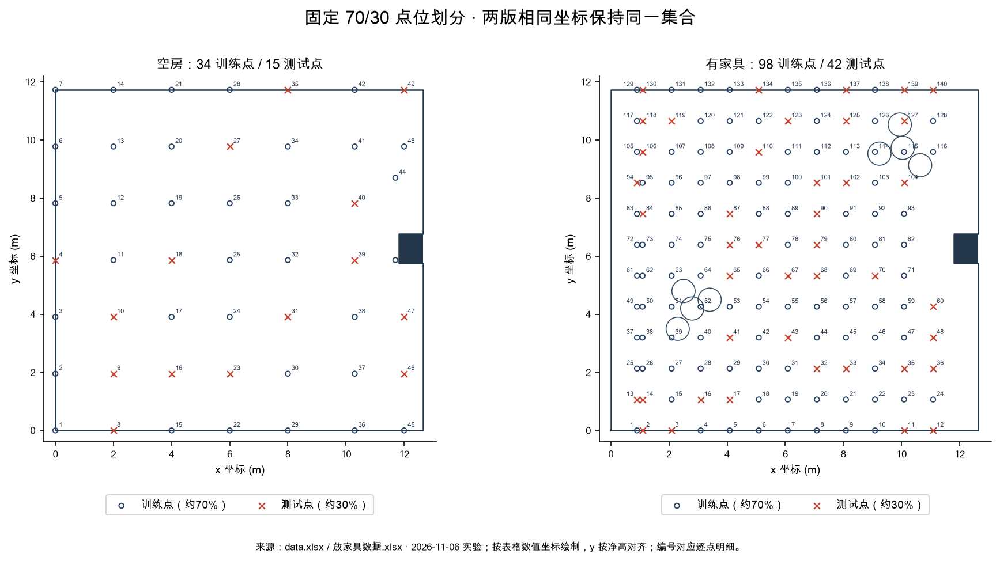
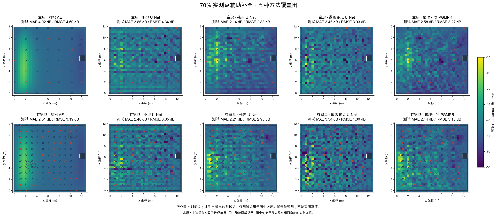
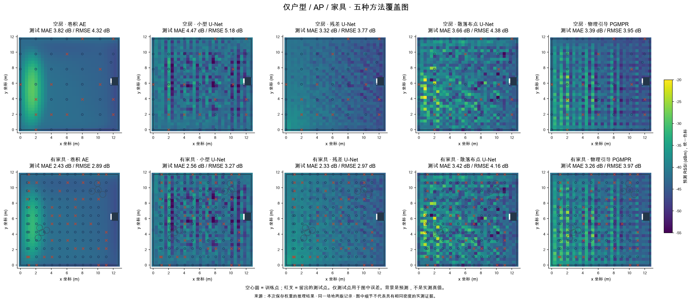
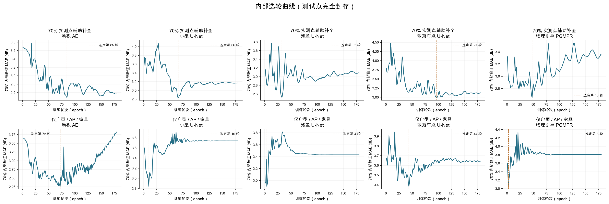
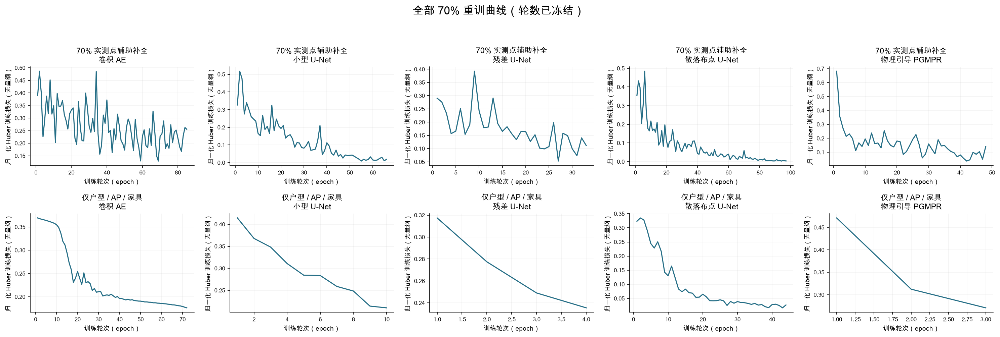
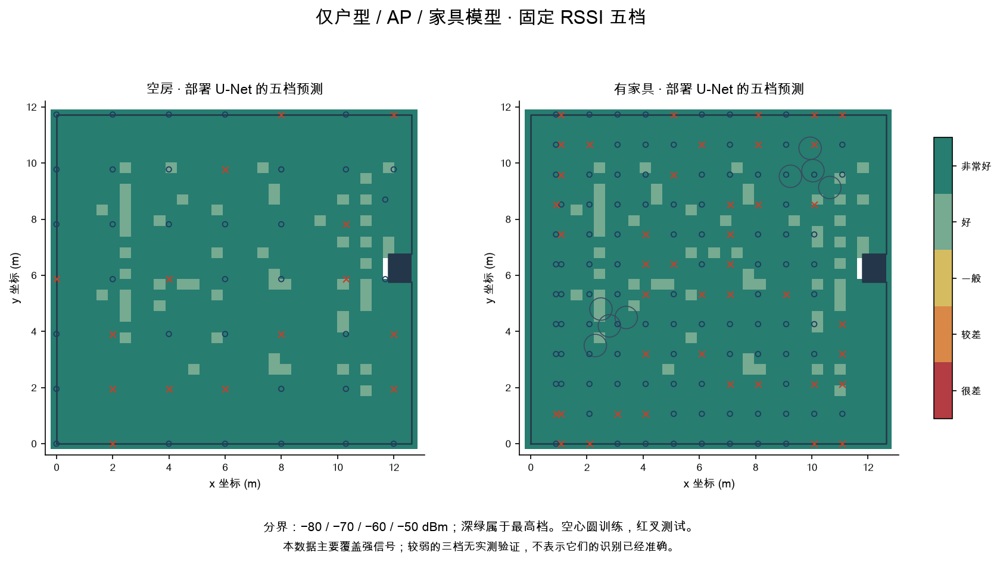
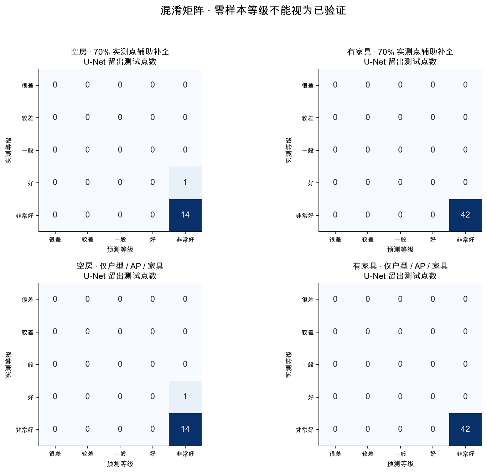
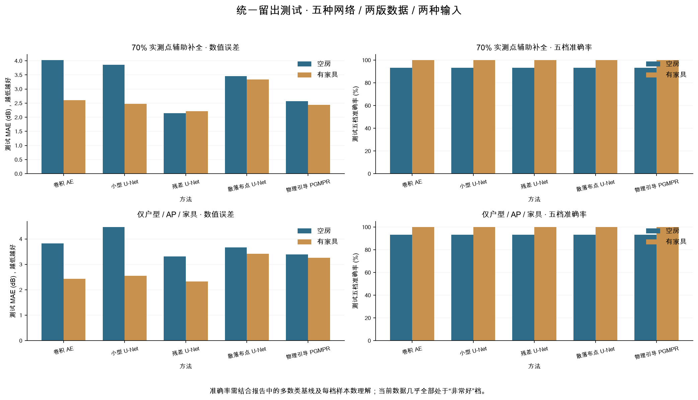

RMSE 5.18 dB · 五档准确率 93.3%
准确率 95% Wilson 区间 70.2%～98.8%
34 训练 / 15 测试
测试档位人数（很差→非常好）：[0, 0, 0, 1, 14]
始终猜训练集多数档的准确率：93.3%
空房 49 点、有家具 140 点。五种方法使用约 70% 的数据训练，封存约 30% 的点检查误差。用户可打开预测编辑器，设置户型、Wi-Fi 位置和家具。
RMSE 5.18 dB · 五档准确率 93.3%
准确率 95% Wilson 区间 70.2%～98.8%
34 训练 / 15 测试
测试档位人数（很差→非常好）：[0, 0, 0, 1, 14]
始终猜训练集多数档的准确率：93.3%
RMSE 3.27 dB · 五档准确率 100.0%
准确率 95% Wilson 区间 91.6%～100.0%
98 训练 / 42 测试
测试档位人数（很差→非常好）：[0, 0, 0, 0, 42]
始终猜训练集多数档的准确率：100.0%
空心圆用于训练，红叉用于最终测试。测试点从未用于梯度、归一化、训练轮数选择或部署模型选择。五种方法使用相同划分；部署界面预先选用小型 U-Net。

两版共用固定测试点。MAE / RMSE 越低越好。正常范围 MAE 仅统计实测位于 −70～−40 dBm 的测试点。
| 数据 | 方法 | MAE (dB) | RMSE (dB) | 五档准确率 | Macro F1 | 正常范围 MAE |
|---|---|---|---|---|---|---|
| 空房 | 卷积 AE | 4.023 | 4.504 | 93.33% | 0.483 | 3.790 |
| 空房 | 小型 U-Net | 3.863 | 4.336 | 93.33% | 0.483 | 3.960 |
| 空房 | 残差 U-Net | 2.142 | 2.833 | 93.33% | 0.483 | 2.292 |
| 空房 | 散落布点 U-Net | 3.461 | 3.931 | 93.33% | 0.483 | 3.677 |
| 空房 | 物理引导 PGMPR | 2.576 | 3.271 | 93.33% | 0.483 | 2.689 |
| 空房 | 基线 · IDW 插值 | 2.923 | 3.662 | 93.33% | 0.483 | — |
| 有家具 | 卷积 AE | 2.606 | 3.186 | 100.00% | 1.000 | 2.439 |
| 有家具 | 小型 U-Net | 2.480 | 3.047 | 100.00% | 1.000 | 2.479 |
| 有家具 | 残差 U-Net | 2.213 | 2.947 | 100.00% | 1.000 | 2.035 |
| 有家具 | 散落布点 U-Net | 3.340 | 4.303 | 100.00% | 1.000 | 2.949 |
| 有家具 | 物理引导 PGMPR | 2.439 | 3.096 | 100.00% | 1.000 | 1.978 |
| 有家具 | 基线 · IDW 插值 | 1.791 | 2.304 | 100.00% | 1.000 | — |

两版共用固定测试点。MAE / RMSE 越低越好。正常范围 MAE 仅统计实测位于 −70～−40 dBm 的测试点。
| 数据 | 方法 | MAE (dB) | RMSE (dB) | 五档准确率 | Macro F1 | 正常范围 MAE |
|---|---|---|---|---|---|---|
| 空房 | 卷积 AE | 3.823 | 4.317 | 93.33% | 0.483 | 3.849 |
| 空房 | 小型 U-Net | 4.467 | 5.176 | 93.33% | 0.483 | 4.946 |
| 空房 | 残差 U-Net | 3.317 | 3.774 | 93.33% | 0.483 | 3.445 |
| 空房 | 散落布点 U-Net | 3.661 | 4.376 | 93.33% | 0.483 | 4.267 |
| 空房 | 物理引导 PGMPR | 3.387 | 3.951 | 93.33% | 0.483 | 3.182 |
| 空房 | 基线 · 物理趋势回归 | 3.557 | 3.914 | 93.33% | 0.483 | — |
| 有家具 | 卷积 AE | 2.427 | 2.892 | 100.00% | 1.000 | 2.095 |
| 有家具 | 小型 U-Net | 2.558 | 3.271 | 100.00% | 1.000 | 2.443 |
| 有家具 | 残差 U-Net | 2.333 | 2.972 | 100.00% | 1.000 | 2.200 |
| 有家具 | 散落布点 U-Net | 3.423 | 4.159 | 100.00% | 1.000 | 3.132 |
| 有家具 | 物理引导 PGMPR | 3.255 | 3.966 | 100.00% | 1.000 | 3.157 |
| 有家具 | 基线 · 物理趋势回归 | 2.186 | 2.785 | 100.00% | 1.000 | — |

本次家具版 IDW 基线 MAE 为 1.791 dB，低于五种补全网络。仅户型物理趋势基线 MAE 为 2.186 dB，也低于部署 U-Net 的 2.558 dB。当前证据不支持“神经网络必然更准”。Macro F1 只对测试中出现的等级平均；全五档 F1 及每档 precision/recall 可在完整指标 JSON 复查。
两种任务各训练五个网络。先在 70% 内部留出验证点，最多训练 180 轮选出各网络轮数，再从零使用全部 70% 重训。内部验证更偏好 AE；编辑器事先固定用 U-Net 以复用浏览器推理，不根据最终测试成绩改选。32 × 32 网格、宽度 8；基础输入扩为 9 通道，PGMPR 为 12 通道并拼接残差先验。损失只在真实测点上计算。
补全任务的残差先验为训练输入点 IDW；仅户型任务的先验是只由 70% 拟合的物理趋势。散落布点方法在补全训练中改变输入抽样，在仅户型训练中改变目标点子集。没有使用旧全量微调权重，也没有将插值充当实测答案。


五档分界为 −80 / −70 / −60 / −50 dBm。该分类描述 RSSI 强弱，不保证网速，也不把偏强测量的饱和风险视为合格采集。



完整指标 JSON · 固定划分 · 逐点预测 · 复现与使用说明
空间相关性限制：两版有两组不同原始位置相距约 0.21 m，在 32 节点输出网格落入同一节点附近且分属训练/测试。它们不是重复标签，但说明本次属于邻近点预测；未采用隔离整块区域的空间外推检验。95% 区间也未修正这种空间相关，不能作为新户型保证。
{
"seed": 20261106,
"requested_train_ratio": 0.7,
"requested_test_ratio": 0.3,
"split_unit": "0.2m coordinate cell grouped across versions",
"inner_ratio": 0.8,
"epochs_max": 180,
"width": 8,
"grid_n": 32,
"torch": "2.14.1",
"python": "3.14.7",
"trained_from_scratch": true,
"old_weights_loaded": false,
"outer_test_used_for_selection": false,
"source_note": "User explicitly supplied empty/furnished versions for this experiment; collection metadata remain incomplete.",
"coordinate_note": "Numerical x coordinates retained, y scaled 11.731/12; historical x-direction descriptions conflict. Alignment assumed, no causal furniture comparison.",
"ap": {
"x": 0,
"y": 0,
"source": "assumed (0,0); actual AP coordinates not supplied"
},
"limitation": "Within-room point holdout only. Not cross-room, AP-relocation, furniture-material or five-grade full-range validation."
}{
"furniture": {
"n_points": 140,
"nominal_cells": 144,
"missing_cells": [
[
11.09,
5.45
],
[
11.09,
6.54
],
[
11.09,
7.63
],
[
11.09,
8.72
]
],
"n_missing": 4,
"x_values_data": [
0.9,
1.09,
2.09,
3.09,
4.09,
5.09,
6.09,
7.09,
8.09,
9.09,
10.09,
11.09
],
"y_values_data": [
0.0,
1.09,
2.18,
3.27,
4.36,
5.45,
6.54,
7.63,
8.72,
9.81,
10.9,
12.0
],
"rssi_min": -52.0,
"rssi_max": -19.0,
"rssi_mean": -41.107,
"rssi_median": -42.0,
"raw_positive_count": 120,
"raw_negative_count": 20,
"br04_too_strong": [
2,
9,
11,
15,
19,
21,
22,
25,
26,
27,
33,
37,
38,
39,
40,
41,
44,
49,
50,
51,
52,
61,
62,
63,
64,
66,
72,
73,
77,
84,
111,
127
],
"br04_too_weak": [],
"n_br04_normal": 108,
"outside_room_idx": [],
"min_neighbor_spacing_m": 0.19,
"near_furniture_1m_idx": [
39,
40,
51,
52,
53,
63,
64,
104,
114,
115,
116,
126,
127
],
"furniture_count": 8,
"table_count": 2,
"chair_count": 6,
"source_file": "放家具数据.xlsx",
"source_sha256": "a87480cd2d10cc0d1f74314a8a415b3e7feb21dab0c9bcebc6c76dbb4a3787c0",
"sheet": "Sheet1",
"coordinate_convention": "原点=室内西南角；x 向东；y 向北",
"x_scale": 1.0,
"y_scale": 0.9775833333333334,
"rssi_rule": "rssi_dbm = -abs(原始数值)",
"orientation_assumption": "按家具图约定将表格 x 增大方向解释为向东；若现场方向相反，需镜像后重跑"
}
}{
"completion": {
"ae": {
"selected_epoch": 85,
"inner_val_mae": 2.4821109771728516
},
"unet": {
"selected_epoch": 66,
"inner_val_mae": 2.8359596729278564
},
"resunet": {
"selected_epoch": 33,
"inner_val_mae": 2.5196533203125
},
"unet_scatter": {
"selected_epoch": 97,
"inner_val_mae": 2.9953737258911133
},
"pgmpr": {
"selected_epoch": 48,
"inner_val_mae": 2.652174472808838
},
"selected_by_inner_validation": "ae"
},
"layout": {
"ae": {
"selected_epoch": 72,
"inner_val_mae": 2.262357711791992
},
"unet": {
"selected_epoch": 10,
"inner_val_mae": 2.8415822982788086
},
"resunet": {
"selected_epoch": 4,
"inner_val_mae": 2.901042938232422
},
"unet_scatter": {
"selected_epoch": 44,
"inner_val_mae": 3.3843657970428467
},
"pgmpr": {
"selected_epoch": 3,
"inner_val_mae": 3.0511972904205322
},
"selected_by_inner_validation": "ae"
}
}